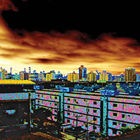

A classificação final do 1º ao 15º:
1º • “Life, Santos” - Nilton Ferreira – Santos, SP
2º • “Existe amor em Santos” – Vitor Serrano – Belo Horizonte, MG
3º • “A Escotilha” - Kalléo Aires dos Santos Rodrigues – Santos, SP
4º • “Pedalando” - Gustavo Constantino Bordinhon – São Paulo, SP
5º • “Laje” - Paula Francis Silva De Carvalho – Santos, SP
6º • “Entrada e Saída de Santos” - Betinho Neto, Santos, SP
7º • “Navegar” – Lucas Busto – São Paulo, SP
8º • “O retorno da cor” - Beatriz Rota-Rossi, Santos, SP
9º • “Movimento” - Dennis Calçada – Santos, SP
10º • “Por do Sol” - Rodiney Assunção, Santos, SP
11º • “Rabiscos” - Renata da Cruz Zanotti – Santos, SP
12º • “A cidade sobre duas pranchas” - Melody Bruni Fernandes, Santos, SP
13º • “Gaivotas” - Felipe Augusto Pereira Duarte, Santos SP
14º • “Prédios Tortos” Bruna Varesteiro Quevedo, Santos, SP
15º • “Os Canais de Santos” - Thomaz Rodrigues Gonçalves, Santos, SP
Classificação do 16º ao 27º inscritos que passaram pela fase 1:
16º • “Atracar” – Lucas Assis Busto – São Paulo, SP
17 º • “Calçadão” - Rodiney Assunção, Santos, SP
18º • “Bonde tipográ¬fico” - Guilherme Augusto Nogueira das Neves, Mongaguá, SP
19º • “Bem-vindo a Santos” - Ana Paula Caldas, Campos, RJ
20º • “Bonde do progresso”- Luís Gustavo de Barros, Tatuí, SP
21º • ”Praça das conquistas” - Gustavo Constantino Bordinhon – São Paulo, SP
22º • “Santos 1822” - Felipe Augusto Pereira Duarte, Santos SP
23º • “Santos Vista aérea” – Jacob Levitinas, São Paulo, SP
24º • “O Obscuro de Santos” - Christian da Silva Marcelo, Guarujá, SP
25º • “Nascer do sol aos nove anos” - Tatiana Barros, Santos, SP
26º • “AMPM-SNTS24hrs” - André Luiz Fernandes e Fernandes, Santos, SP
27º • “O Aquário” - Ingrid Alencar de Lima, Niterói, RJ
Selecionados 1º fase
Para ver todos os inscritos, clique aqui.

{kind=link}
{kind=link}
{kind=link}
{kind=link}
{kind=link}
{kind=link}
{kind=link}
{kind=link}
{kind=link}
{kind=link}
{kind=link}
{kind=link}
{kind=link}
{kind=link}
{kind=link}
{kind=link}
{kind=link}
{kind=link}
{kind=link}
{kind=link}
{kind=link}
{kind=link}
{kind=link}

{kind=link}
{kind=link}
{kind=link}